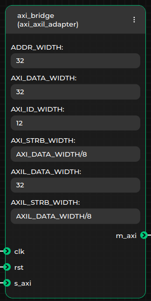
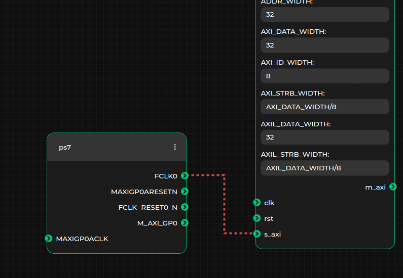
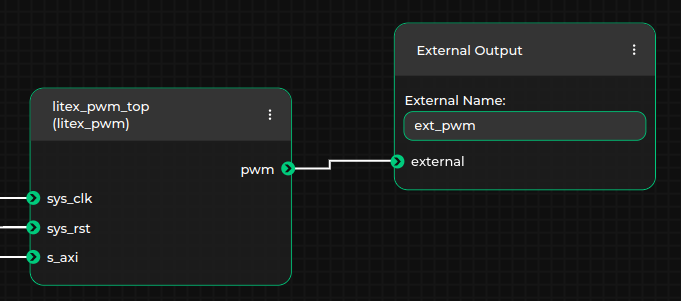
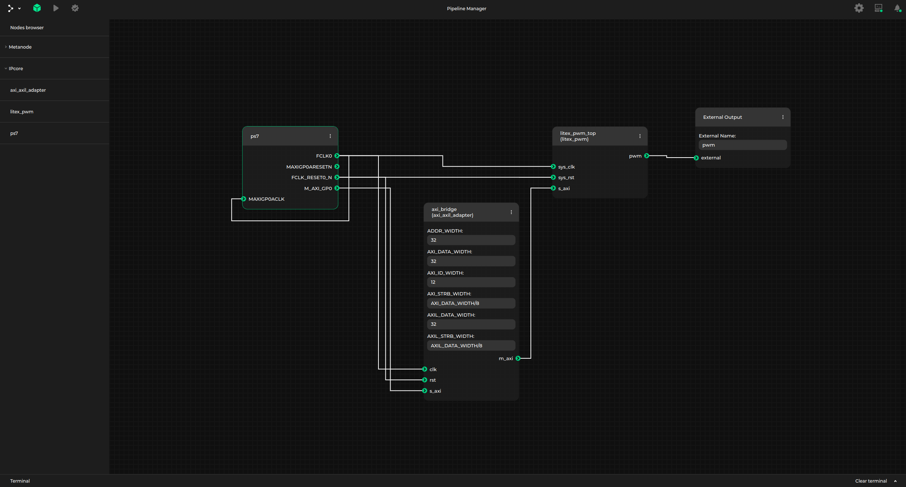

Using topwrap¶
GUI¶
Topwrap can make use of Kenning Pipeline Manager to visualize the process of creating block design.
Run Topwrap with Pipeline Manager¶
Build and run Pipeline Manager server
In order to start creating block design in Pipeline Manager, you need to first build and run a server application - here is a brief instruction on how to achieve this (the process of building and installation of Pipeline Manager is described in detail in its documentation):
python -m topwrap kpm_build_server python -m topwrap kpm_run_serverAfter executing the above-mentioned commands, the Pipeline Manager server is waiting for an external application (i.e. Topwrap) to connect on
127.0.0.1:9000and you can connect to the web GUI frontend in your browser onhttp://127.0.0.1:5000.Establish connection with Topwrap
Once the Pipeline Manager server is running, you can now launch Topwrap’s client application in order to connect to the server. You need to specify:
IP address (
127.0.0.1is default)listening port (
9000is default)yamls describing IP cores, that will be used in the block design
design to load initially (
Noneby default)
An example command, that runs Topwrap’s client, may look like this:
python -m topwrap kpm_client -h 127.0.0.1 -p 9000 \ topwrap/ips/axi/axi_axil_adapter.yaml \ examples/pwm/ipcores/{litex_pwm.yml,ps7.yaml} -d examples/pwm/project.ymlCreate block design in Pipeline Manager
Upon successful connection to a Pipeline Manager server, Topwrap will generate and send to the server a specification describing the structure of previously selected IP cores. If the
-doption was used a design will be shown in gui. From there you can create or modify designs by:adding IP core instances to the block design. Each Pipeline Manager’s node has
deleteandrenameoptions, which make it possible to remove the selected node and change its name respectively. This means that you can create multiple instances of the same IP core.adjusting IP cores’ parameters values. Each node may have input boxes in which you can enter parameters’ values (default parameter values are added while adding an IP core to the block design):

connecting IP cores’ ports and interfaces. Only connections between ports or interfaces of matching types are allowed. This is automatically checked by Pipeline Manager, as the types of nodes’ ports and interfaces are contained in the loaded specification, so Pipeline Manager will prevent you from connecting non-matching interfaces (e.g. AXI4 with AXI4Lite or a port with an interface). A green line will be displayed if a connection is possible to create, or a red line elsewhere:

specifying external ports or interfaces in the top module. This can be done by adding
External Input,External OutputorExternal Inoutmetanodes and creating connections between them and chosen ports or interfaces. Note that you should adjust the name of the external port or interface in a textbox inside selected metanode. In the example below, output portpwmoflitex_pwm_topIP core will be made external in the generated top module and the external port name will be set toext_pwm:

Note, that you don’t always have to create a new block design by hand - you can use a design import feature to load an existing block design from a description in Topwrap’s yaml format.
An example block design in Pipeline Manager for the PWM project may look like this:

Pipeline Manager features¶
While creating a custom block design, you can make use of the following Pipeline Manager’s features:
export (save) design to a file
import (load) design from a file
validate design
build design
Export design to yaml description file¶
Created block design can be saved to a design description file in yaml format, using Pipeline Manager’s Save file option.
Target location on the filesystem can then be browsed in a filesystem dialog window.
Import design from yaml description file¶
Topwrap also supports conversion in the opposite way - block design in Pipeline Manager can be generated from a yaml design description file using Load file feature.
Design validation¶
Pipeline Manager is capable of performing some basic checks at runtime such as interface type checking while creating a connection. However you can also run more complex tests by using Pipeline Manager’s Validate option. Topwrap will then respond with a validity confirmation or error messages. The rules you need to follow in order to keep your block design valid are:
multiple IP cores with the same name are not allowed (except from external metanodes).
parameters values can be integers of different bases (e.g.
0x28,40or0b101000) or arithmetic expressions, that are later evaluated using numexpr.evaluate() function (e.g.(AXI_DATA_WIDTH+1)/4is a valid parameter value assuming that a parameter namedAXI_DATA_WIDTHexists in the same IP core). You can also write a parameter value in a Verilog format (e.g.8'b00011111or8'h1F) - in such case it will be interpreted as a fixed-width bit vector.a single port or interface cannot be external and connected to another IP core at the same time.
connections between two external metanodes are not allowed.
all the created external output or inout ports must have unique names. Only multiple input ports of IP cores can be driven be the same external signal.
Topwrap can also generate warnings if:
some ports or interfaces remain unconnected.
multiple ports are connected to an
External Inputmetanode with an emptyExternal Nameproperty.inoutports of two modules are connected together (allinoutports are required to be directly connected toExternal Inoutmetanodes)
If a block design validation returns a warning, it means that the block design can be successfully built, but it is recommended to follow the suggestion and resolve a particular issue.
Building design¶
Once the design has been created and tested for validity, you can build design using Run button. If the design does not contain any errors, this will result in creating a top module in a directory where topwrap kpm_client was ran, similarly when using Topwrap’s topwrap build command.
CLI¶
Topwrap has a couple CLI only functions that expand gui functionality.
Generating IP core description YAMLs¶
You can use Topwrap to generate ip core description yamls from HDL sources to use them in your project.yml.
To learn how project and core yamls work check design description and ip description
python -m topwrap parse HDL_FILES
In HDL source files, ports that belong to the same interface (e.g. wishbone or AXI), have often a common prefix, which corresponds to the interface name. If such naming convention is followed in the HDL sources, Topwrap can also divide ports into user-specified interfaces, or automatically deduce interfaces names when generating yaml file:
python -m topwrap parse --iface wishbone --iface s_axi HDL_FILES
python -m topwrap parse --iface-deduce HDL_FILES
To get help, use:
python -m topwrap [build|kpm_client|parse] --help
Building design¶
Topwrap can build a synthesizable design from source files connected in a way described by a design file, to do this run:
python -m topwrap build --design project.yml
Where project.yml should be your file with description of the top module.
You can specify a directory to be scanned for additional sources:
python -m topwrap build --sources src --design project.yml
To implement the design for a specific FPGA chip, provide the part name:
python -m topwrap build --sources src --design project.yml --part 'xc7z020clg400-3'